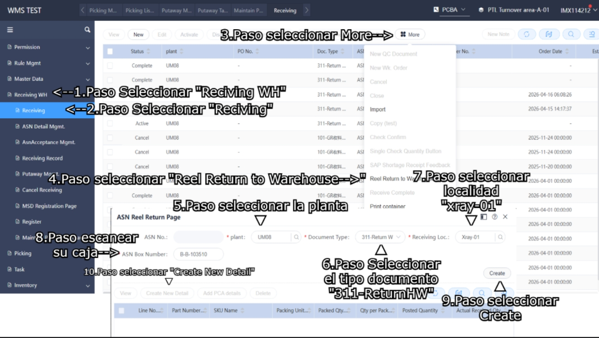
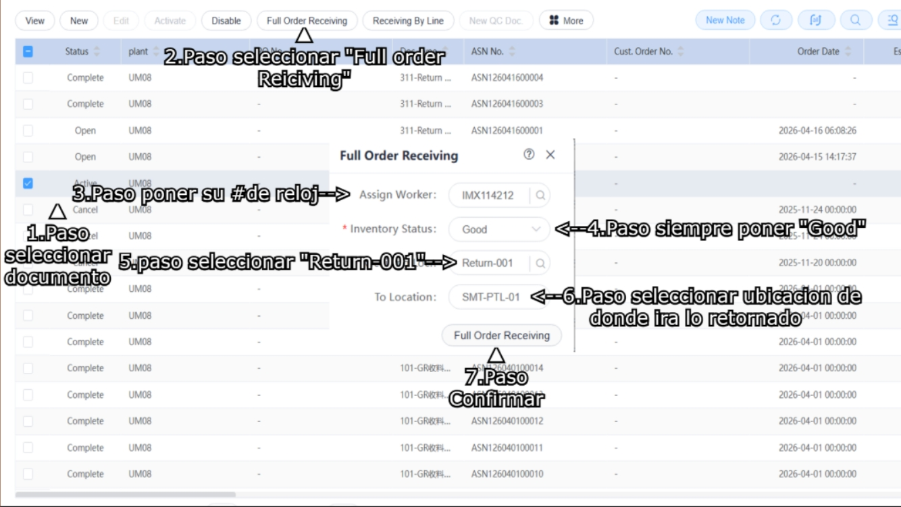

• Para retornar material primero el rollo tendra que pasar por el proseso de Xray, despues de eso ira a la opcion de " Receiving WH", despues en "Receiving"
• Una ves estando en la pestaña de "Receiving" se iran a "More" despues en la opcion de "Reel Return to Warehouse"
• Se les abrira una pestaña donde ponbremos la Planta, el tipo de documento, la area donde se mandaran los rollos y la caja. Una ves llenado toda la informacion le daran en "Create" y sin salirse de esa pestaña le daran en "Create New Detail" para poder scanear los rollos.

• Una ves terminado de escanear los rollos saldran a buscar su documento en la pantalla principal de "Reciving WH" una ves estando en la pantalla principal seleccionara su documento, despues de seleccionarlo se ira a "Full order receiving". Se les abrira una pestaña donde tendran que llenarla de la siguiente manera como lo indica el dibujio
